Project 2.2.2: SMART SOUND ALERT SYSTEM USING¶
| Description | This smart sound alert system illustrate the potential of using Arduino, buzzer and ultrasonic sensor in building a security system. |
|---|---|
| Use case | Creating a smart alarm system . |
Components (Things You will need)¶
|
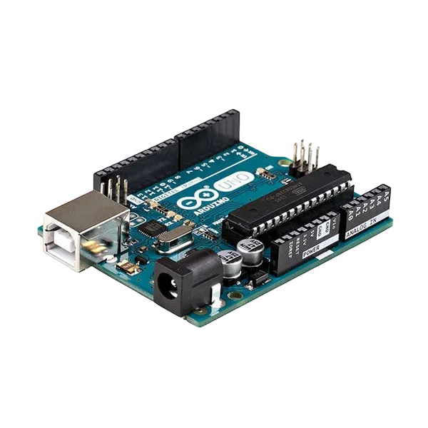
| |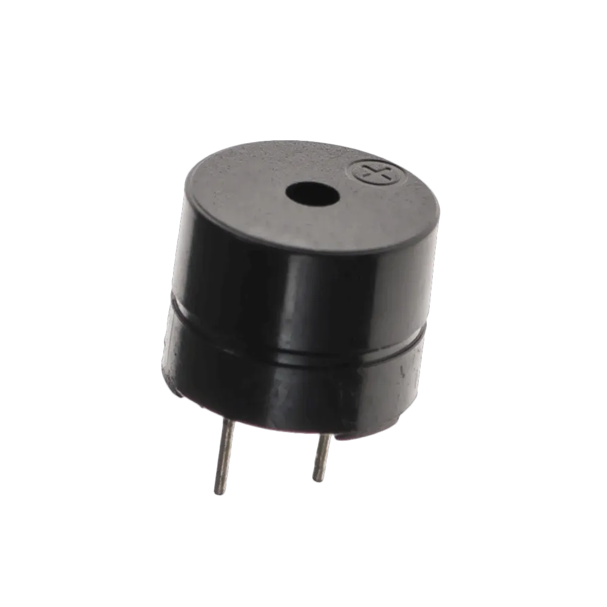
| |
| 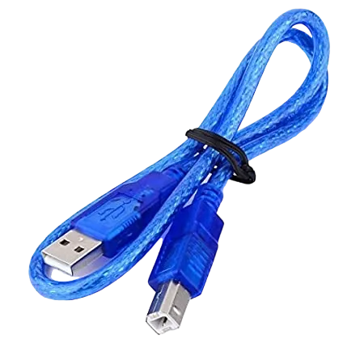
| |
|  |
| --------------------------------------------------- | ------------------------------------------------------ | ----------------------------------------------------------- | --------------------------------------------------------- | ------------------------------------------------------ |
|
| --------------------------------------------------- | ------------------------------------------------------ | ----------------------------------------------------------- | --------------------------------------------------------- | ------------------------------------------------------ |
Building the circuit¶
Things Needed:
- Arduino Uno = 1
- Arduino USB cable = 1
- Jumper wire = 6
- ultrasonic Sensor = 1
- Breadboard = 1
Mounting the component on the breadboard¶
- Breadboard = 1
- Buzzer = 1
- Ultrasonic sensor = 1
Step 1: • The ultrasonic distance sensor has four pins (Echo, Trig, VCC and GND), On the middle section of the breadboard, locate each horizontal section lettered A to J. Take the ultrasonic distance sensor and insert it into any of the lettered section (Say A) horizontally.
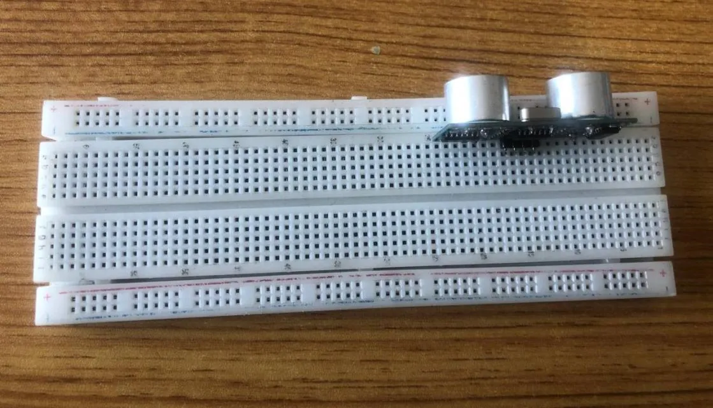
.Step 2: The Buzzer has Two pins (Positive and Negative). The longer pin is positive and the shorter pin is negative. On the middle section of the breadboard, locate each horizontal section lettered A to J. Take the Buzzer and insert it into any of the lettered section (Say A) horizontally.
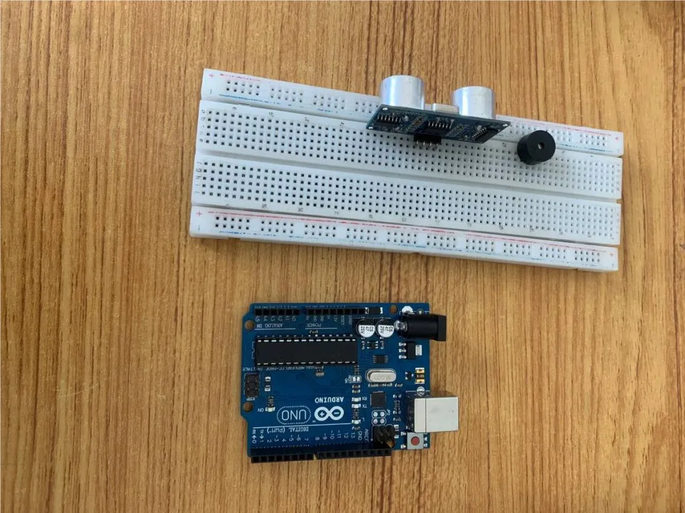
.NB:Take note of where each of the pins are placed on the bread board.
WIRING THE CIRCUIT¶
Things Needed:¶
- 2 Red male-male-to-male jumper wires
- 2 White male-to-male jumper wires
- 2 Green male-to-male jumper wires
- 2 Yellow male-to-male jumper wires
Step 1: Take the Red male-male-to-male jumper wire and place one side of the wire pin under the Echo pin of the ultrasonic distance sensor and the other side of the wire pin to the digital pin 2 on the Arduino uno board.
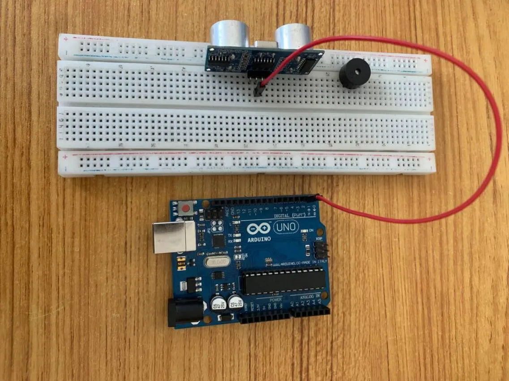
.NB:Take note of the digital pin you allocated to the Echo pin.
Step 2: Take the Green male-male-to-male jumper wire and place one side of the wire pin under the Trig pin of the ultrasonic distance sensor and the other side of the wire pin to the digital pin 3 on the Arduino uno board.
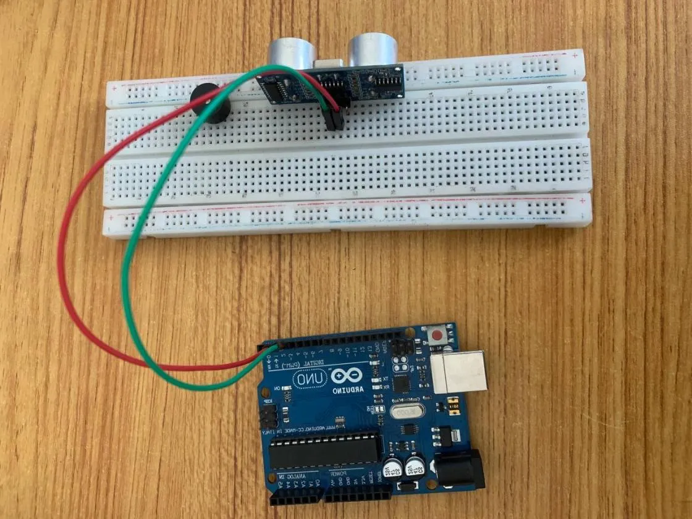
.NB:Take note of the digital pin you allocated to the trig pin.
Step 3: Take the Blue male-male-to-male jumper wire and place one side of the wire pin under the VCC pin of the ultrasonic distance sensor and the other side of the wire pin to the 5V pin on the Arduino uno board.
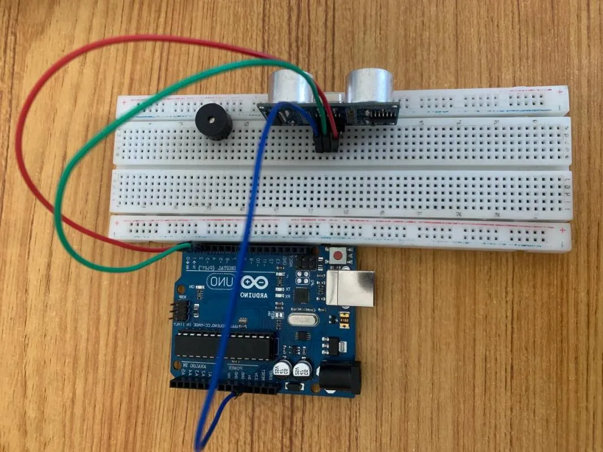
.Step 4: Finally, Take the White male-male-to-male jumper wire and place one side of the wire pin under the GND pin of the ultrasonic distance sensor and the other side of the wire pin to the GND port on the Arduino Uno Board.
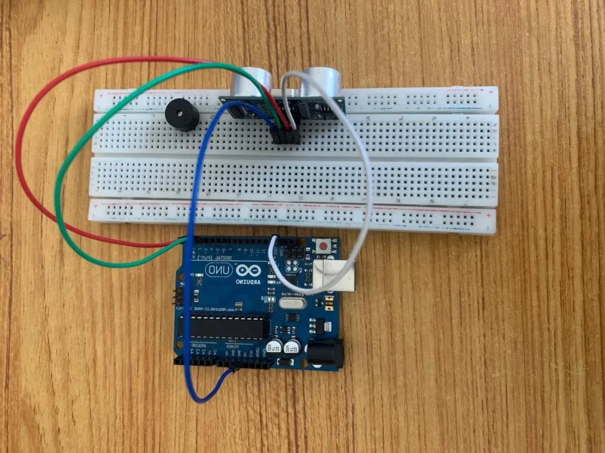
.Step 5: Take the Red male-male-to-male jumper wire and place one side of the wire pin under the Positive pin of the Buzzer and the other side of the wire pin to the digital pin 4 on the Arduino uno board.
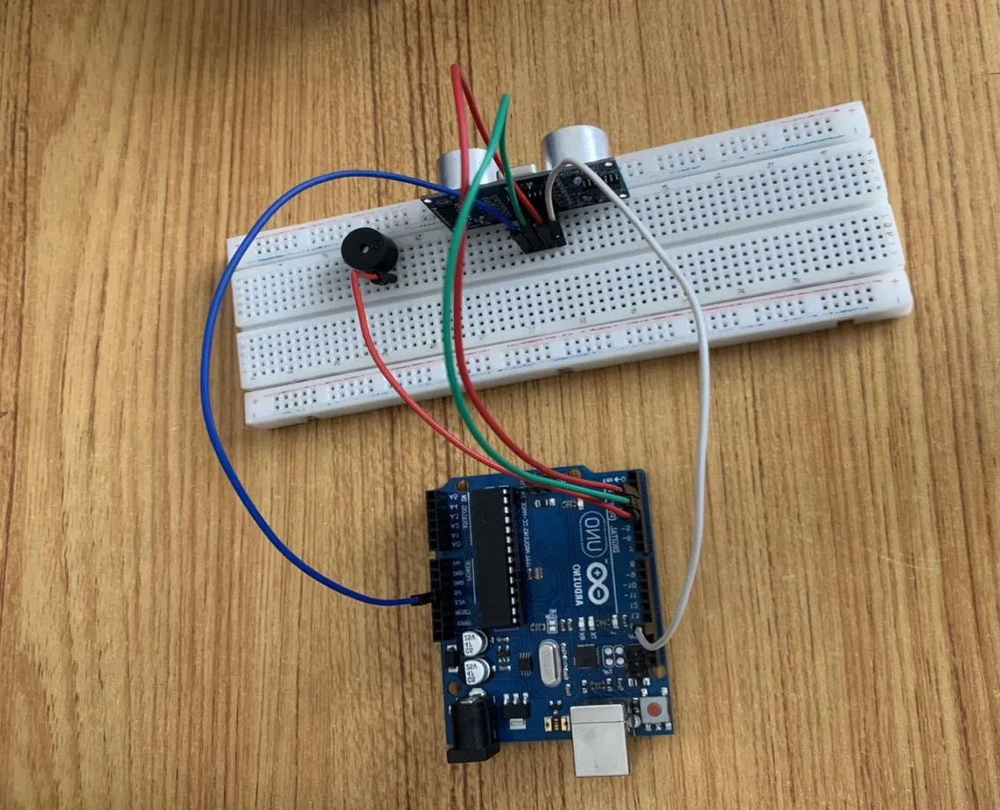
.NB:Take note of the digital pin you allocated to the Positive pin.
Step 6: Take the White male-male-to-male jumper wire and place one side of the wire pin under the Negative pin of the Buzzer and the other side of the wire pin to GND on the Arduino uno board.
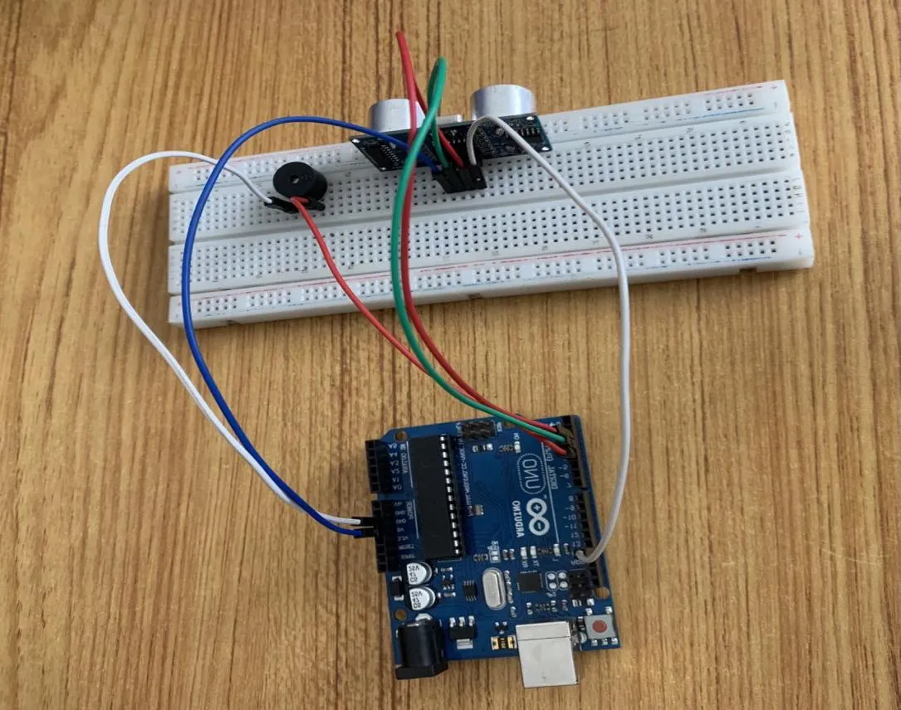
.Step 7: Connect the USB port of the Arduino cable to the USB port of your laptop and the other side to the Arduino Uno Board.
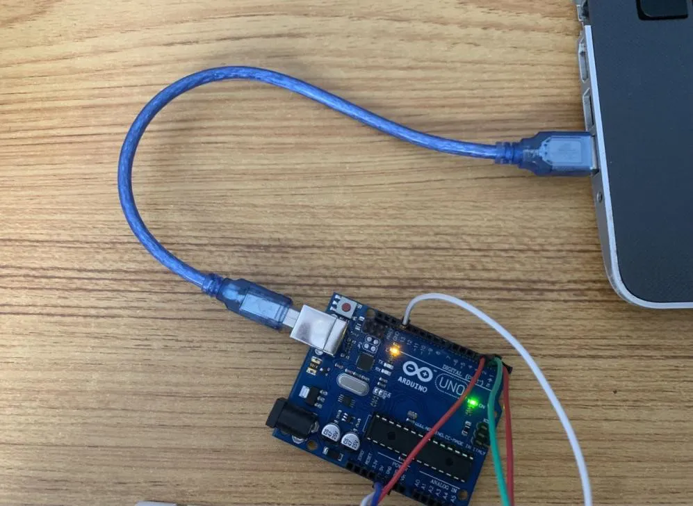
.PROGRAMMING¶
Step 1: Open your Arduino IDE. See how to set up here: Getting Started.
Step 2: Type const int Echo = 2;
as shown below in the picture below: on line one before void Setup() function.
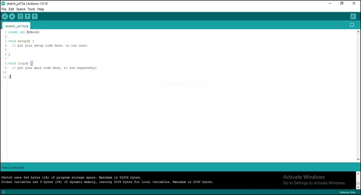
.Step 3: Type int Trig = 3;
as shown below in the picture below: on line one before void Setup() function.
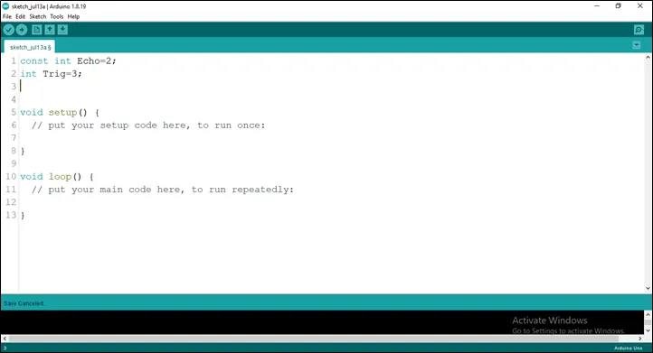
.Step 4: Type int B = 4;
as shown below in the picture below: on line one before void Setup() function.
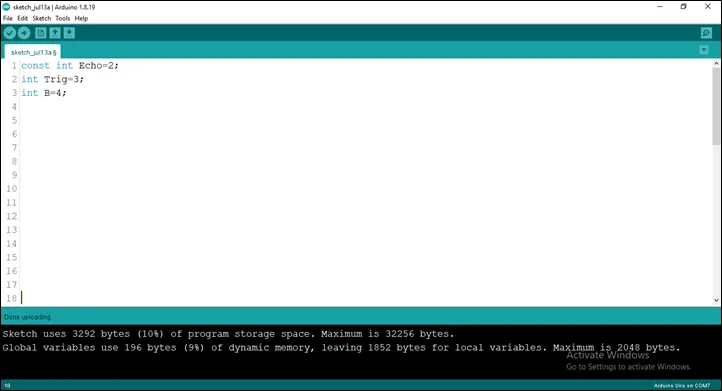
.Step 5: Type long duration; and Type long duration;
as shown below in the picture below: on line one before void Setup() function.
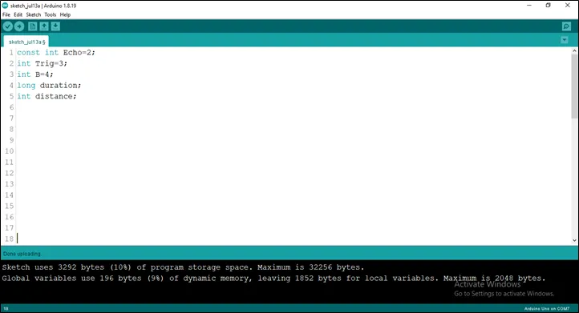
.Step 6: Type const int dist_threshold=20;
as shown below in the picture below: on line one before void Setup() function.
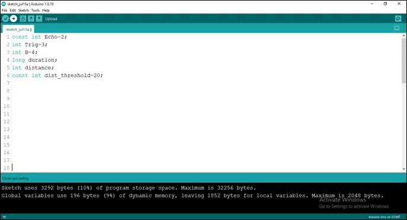
.NB: Make sure you avoid errors when typing. Do not omit any character or symbol especially the bracket {} and semicolons; and place them as you see in the image. The code that comes after the two ash backslashes “//” are called comments. They are not part of the code that will be run, they only explain the lines of code. You can avoid typing them.
Step 7: In the {} after the
pinMode (Echo, INTPUT);
pinMode (Trig, OUTPUT);
Serial.begin (9600);
pinMode (B, OUTPUT);
as shown below in the picture below:
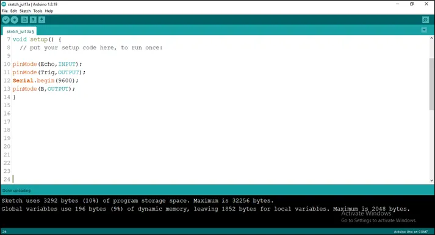
.Step 8: In the {} after the
digitalWrite (Trig, LOW);
delay (200);
digitalWrite (Trig, HIGH);
delay (100);
digitalWrite (Trig, LOW);
duration = pulseIn (Echo, HIGH);
distance = duration * 0.034/2;
as shown below in the picture below:
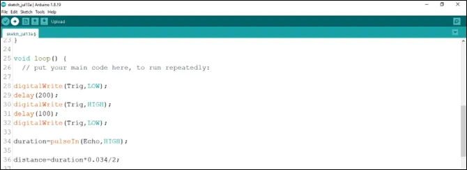
.Step 5: Type This Function as shown in the image below.
if (distance < dist_threshold)
digitalWrite (B, HIGH);
delay (200);
digitalWrite (B, LOW);
Serial.print (distance);
Serial.println (“cm”);
delay (100);
distance = duration * 0.034/2;
as shown in the picture below.
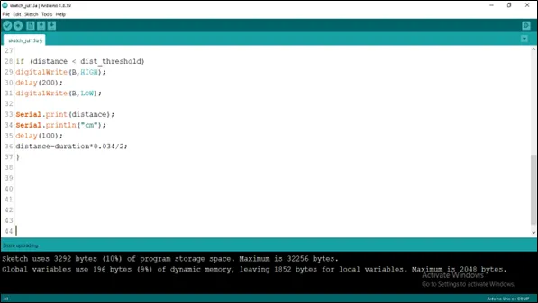
.Step 6: Save your code. See the Getting Started section
Step 7: Select the arduino board and port See the Getting Started section:Selecting Arduino Board Type and Uploading your code.
Step 8: Upload your code. See the Getting Started section:Selecting Arduino Board Type and Uploading your code
Step 9: Click on the serial monitor icon to view the amount of sound being recorded as shown in the picture below:
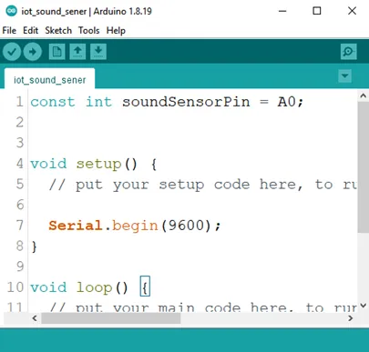
.OBSERVATION¶
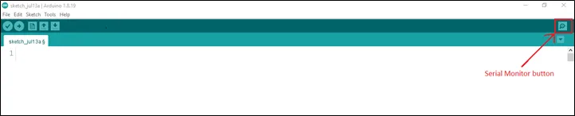
CONCLUSION¶
If you encounter any problems when trying to upload your code to the board, run through your code again to check for any errors or missing lines of code. If you did not encounter any problems and the program ran as expected, Congratulations on a job well done.